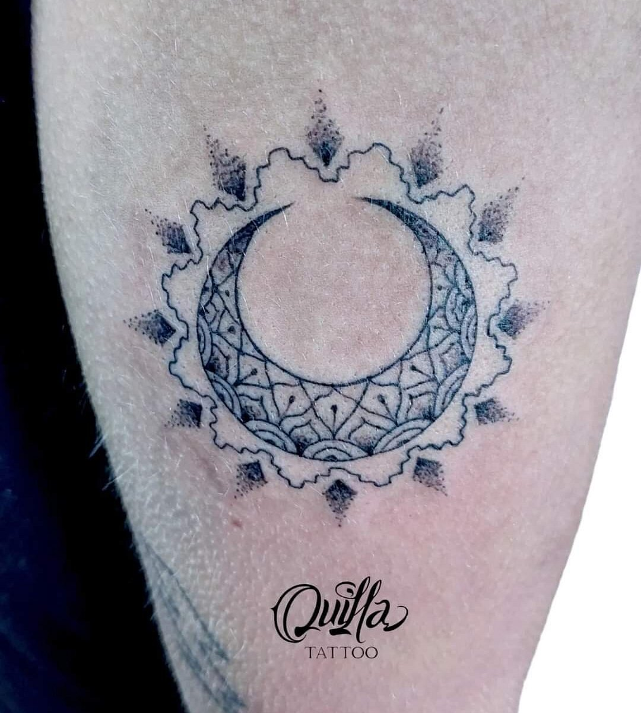
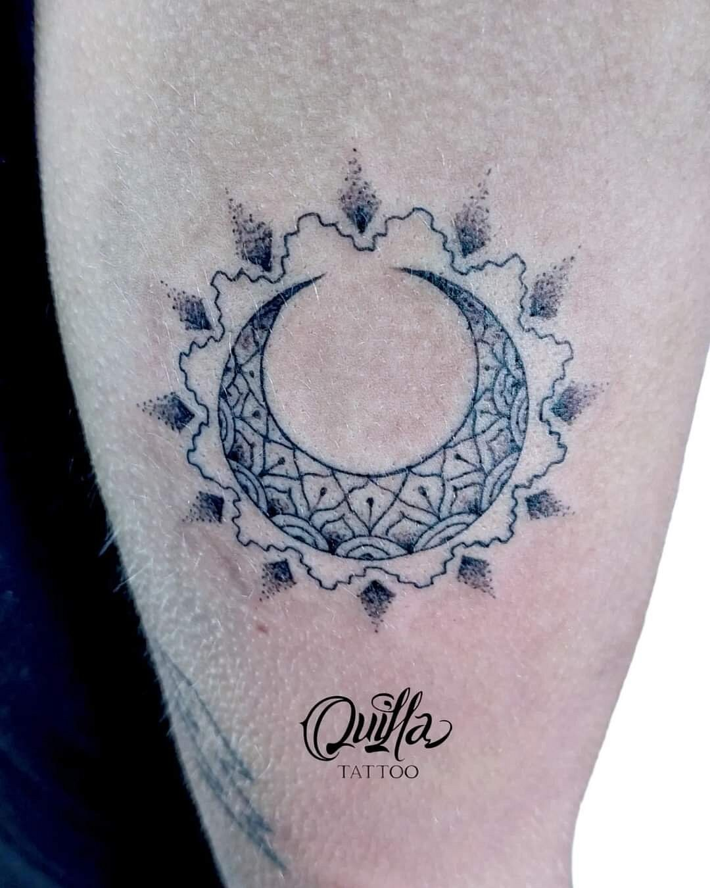
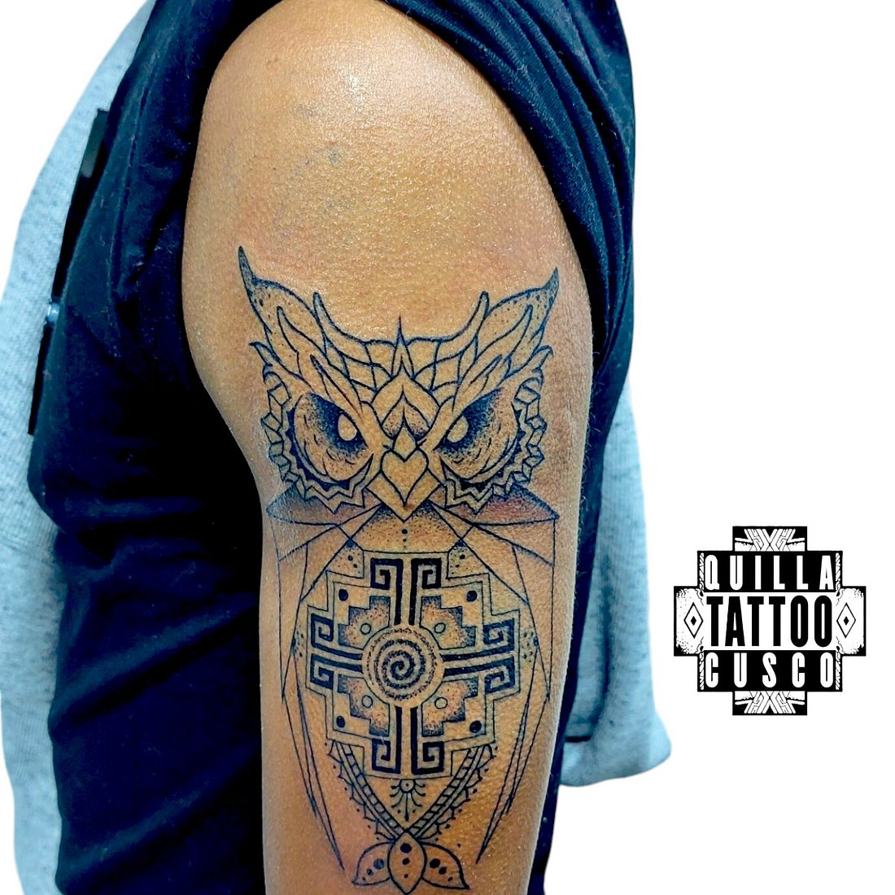
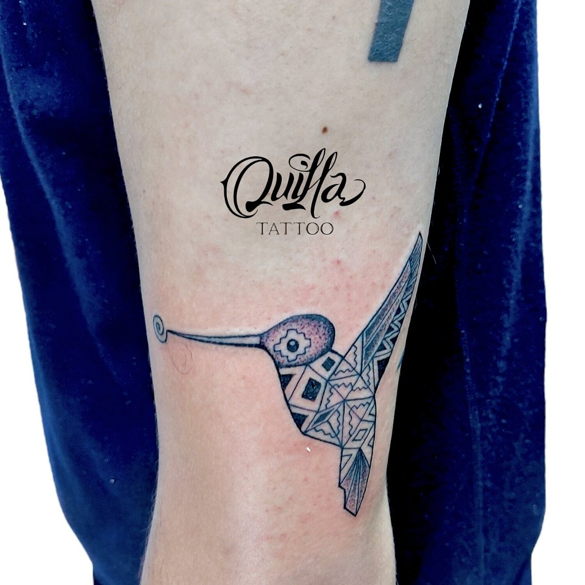
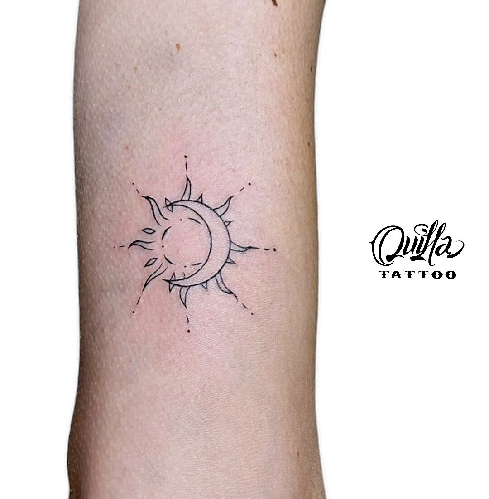
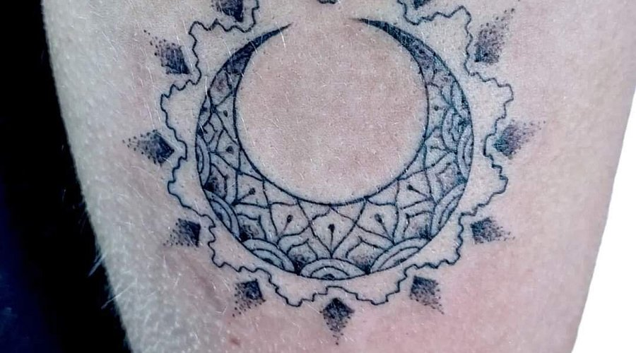

Delicate custom tattoos and piercing in the heart of San Blas.

Fine line work that ages gracefully. Clean, precise lines — perfect for a meaningful souvenir from Cusco.
Located in San Blas, Cusco's most artistic neighborhood — surrounded by galleries, studios, and colonial charm.
Send your idea, ask about availability, and get answers before you even step into the studio.
Every design is adapted to your style. We work with you to create something unique and meaningful.
A selection of custom fine line and dotwork tattoos created at our San Blas studio.




✦ Images from Quilla Tattoo's TripAdvisor gallery · Used for private demo only · Final version requires authorization
Roxanna is the lead artist at Quilla Tattoo. Specializing in fine line, dotwork, and custom designs, she has consistently received praise for her precision, attention to detail, and warm approach with every client.
"Roxy's line work is beautiful. Very clean lines. She definitely has one of the best clean fine lines I've ever seen. Super detail oriented and has magical hands."
— Review via Wanderlog

Delicate, precise lines. Ideal for minimalist, detailed, and elegant designs that age gracefully.
Every tattoo is custom-designed. Bring your idea and we'll develop it together into something unique.
Pointillism technique creating shades, textures, and geometric forms with artistic precision.
Professional piercing service. Placement advice and aftercare guidance included.
Practical guidance for those getting tattooed while traveling.
Ask your artist for personalized aftercare instructions. Every tattoo and every skin is different.
Travelers highlight the clean fine line work, friendly service, and professional atmosphere.
"Serious and clean tattoo studio. The tattoo artist is very good and patient. Wide choice of designs. I recommend it."
— Via TripAdvisor
"Tattoos came out fantastic, line work was amazing and the staff were very fun. Very clean shop as well, highly recommend."
— Via TripAdvisor
"It was my first tattoo and everything turned out great. I 100% recommend Quilla Tattoo — a good memory of my trip to Cusco."
— Via TripAdvisor
"Very clean and professional. Also English speaking which was very helpful. The whole place has a beautiful vibe. We would come back any time."
— Via Wanderlog
Calle Sta. Catalina Ancha 366
Centro Histórico, Cusco
Send your idea by WhatsApp and ask about availability. We're here to help you create something unique.
We reply in English & Spanish · Walk-ins welcome, appointments recommended